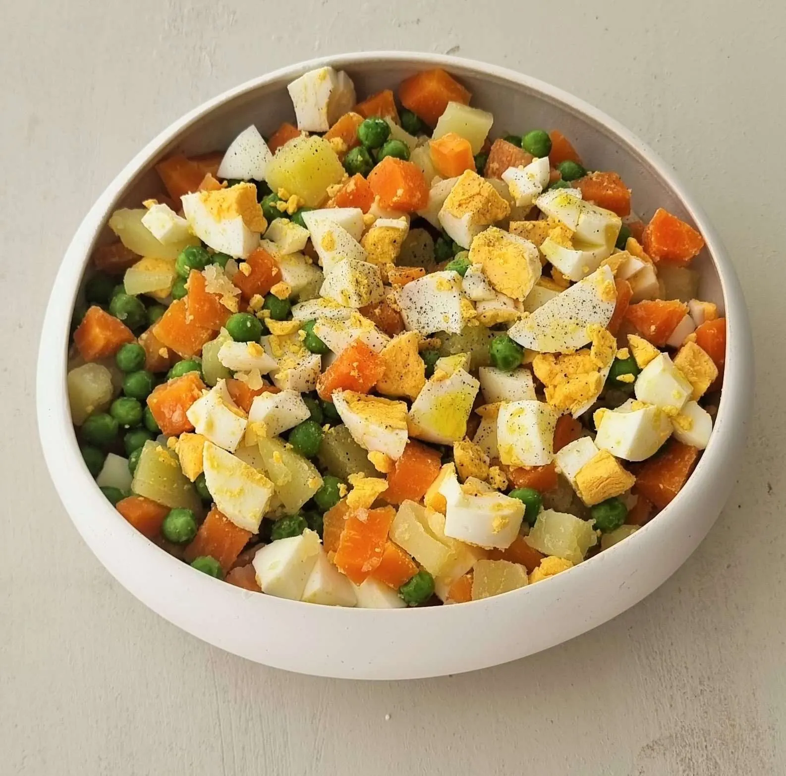

Salada Russa Recipe

This is a healthy dish that I had all the time growing up, perfect in the summer, and makes a large batch so you have a few meals sorted! It's called "Russian Salad", I believe inspired by Olivye Salad, but with a Portuguese twist to it!
There is two versions of this dish in Portugal (more if you change up the vegetable selection), the mayo version, and the olive oil version. Essentially, once you're ready to serve, you can either mix in a healthy dose of mayo, or drizzle with olive oil. I believe the mayo version is closer to the original Russian salad, but I personally prefer the olive oil version, as it is healthier, and allows for the taste of the vegetables to shine through, especially if you're someone like me who loves veggies!
So let's get down to business, for ingredients you will need:
- Small Potatoes - 8
- Green Beans - 200g
- Carrots - 400g
- Peas - 100g
- Tuna Chunks in Oil- 300g
- Eggs - 3
- Olive Oil
- Salt
Now that we have our ingredients, we can begin making our delicious Salada Russa!
- First, we're going to start by washing our veggies thoroughly in water. Then, we're going to peel our carrots and potatoes. Once peeled, cut the small potatoes in half, and cut the carrots in half, then into slices. Cut the stems off the green beans, then slice them into chunks.
- Now grab a large pot, and throw in the potatoes, green beans, carrots and eggs. Add enough water to cover everything, plus some salt, and set the temperature to high. Let the veggies and eggs boil for about 20-30 minutes, test the consistency of the potatoes by stabbing them with a fork to check if they are cooked through.
- Once the veggies are cooked through, add in the peas and let boil for 5 minutes.
- Grab your tuna chunks tins, and pour out the oil. Add them to a large bowl.
- Take the pot out of the heat, and pour out the water. Grab the eggs and put them in a bowl with cold water for a couple of minutes. Proceed to peel the shells off.
- Add the veggies to the large bowl. Slice the eggs up and add them in as well. Now you want to pour some salt over and stir everything together. When serving, drizzle olive oil over your Salada Russa, and you're all set!